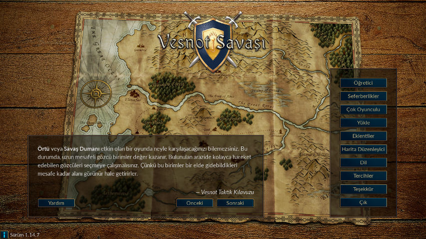
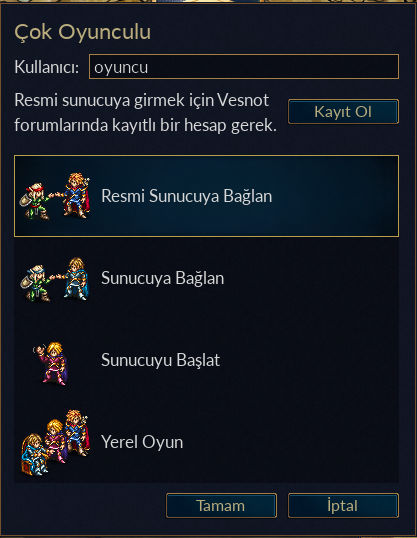
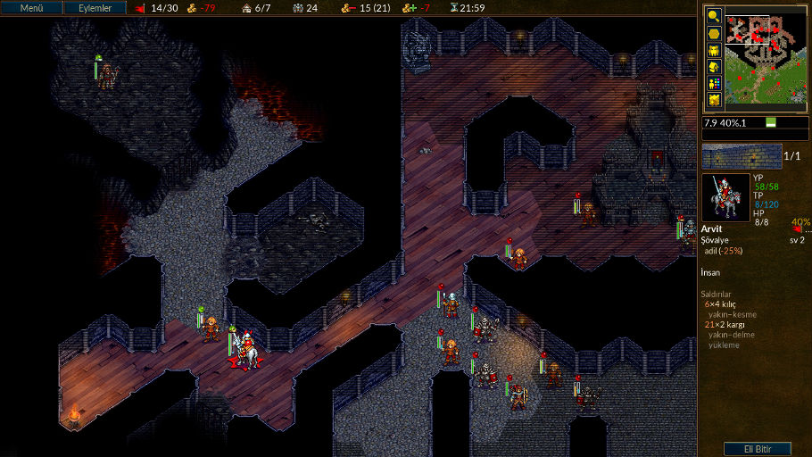
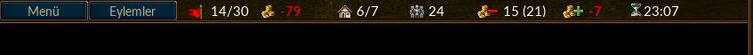
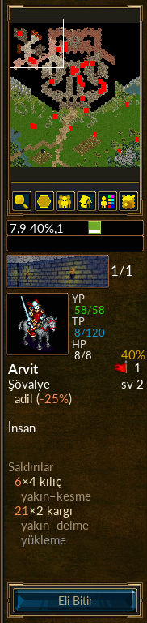
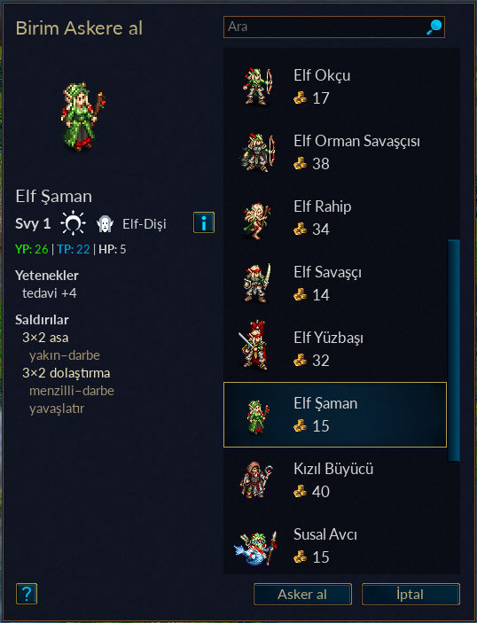

İçindekiler
Tablolar
Vesnot Savaşı sırayla oynanan kurgusal öykülü bir strateji oyunudur.
Acemileri askere almaya başlayıp bunları aşama aşama zorlu emektarlar haline getirerek büyük bir ordu kurabilir, daha sonraki oyunlarda en dayanıklı savaşçıları geri çağırarak karşısında kimsenin duramayacağı ölümcül bir kuvvet oluşturabilirsiniz! Birimleri geniş bir uzmanlık alanından seçebilir ve rakipleriyle her türlü arazi koşulunda iyi dövüşecek güçte bir ordu elde edebilirsiniz.
Vesnot oynanmayı bekleyen bir çok öyküye sahiptir. Vesnot krallığının hudutlarında haydutlarla, yarı ölülerle ve orklarla, diğer yanda yüksek tepelerde ejderlerle, Eten ormanının yeşillikleri arasında elflerle, Kanalga’nın geniş salonlarında cücelerle veya İnciler Körfezinde susallar ile dövüşebilirsiniz. Vesnot tahtını yeniden kazanmak için dövüşebilir veya ölümlüler diyarına hakim olmak için yarı ölüler üzerinde korkunç gücünüzü kullanabilir ya da topraklarınıza saldırmaya cüret eden insanlara karşı zafer kazanmak için şanlı Ork kabilenizi yönetebilirsiniz.
İki yüzden fazla birim (piyade, binici, okçu, büyücü sadece bir kaçı) arasından seçim yapabilir, küçük ekip pusularından devasa ordu çarpışmalarına kadar bir aralıkta savaşlar düzenleyebilirsiniz. Ayrıca çok oyunculu kurgusal savaşlarda dövüşebilir, arkadaşlarınıza – veya yabancılara – meydan okuyabilirsiniz.
Vesnot Savaşı açık kaynak kodlu bir yazılım olup giderek büyüyen bir gönüllü topluluğunca geliştirilmektedir. Siz de kendi özel birimlerinizi oluşturabilir ve kendi senaryolarınızı ve hatta gayet kapsamlı olarak kendi seferberliklerinizi yazabilirsiniz. Kullanıcı yapımı içeriği eklenti sunucularımızdan indirebilirsiniz. Bunların en iyileri seçilip oyunun resmi sürümleri içinde dağıtılmaktadır.
Büyük Kıtanın Vesnot sakinlerinin yaşadığı kısmından bahsederken genellikle üç ana bölge söz konusu olur: Genel olarak kanunsuzların yaşadığı Kuzey Toprakları; Vesnot Krallığı ve onun ayrılmaz parçası Elensefar; Eten Ormanı ve çevresinde Güneybatı Elflerinin yaşam alanları.
Vesnot Krallığı bu toprakların merkezinde yer alır. Kuzeyde Büyük Nehir, doğuda ve güneyde Alçak Tepeler, güneybatıda Eten Ormanı ve batıda Okyanus arasında kalan bölge Vesnot Krallığıdır. Elensefar, krallığın en eski eyaleti olup kuzeyde Büyük Nehir, güneyde İnciler Körfezi, batıda Okyanus, doğuda ise belli belirsiz bir sınırla Vesnot yer alır.
Kuzey Toprakları, Büyük Nehrin kuzeyindeki vahşi bölgedir. Bölge halkı ork, cüce, barbar ve elf topluluklarından oluşur. Kuzey ve doğusu Kuzey Elflerinin büyük krallığının bulunduğu Lintanir ormanı ile çevrilidir.
Kıtada yer yer rastlanan köyler ordunuz için gelir kaynaklarıdır ve yaralı askerlerin tedavisinde kullanılır. Ülkede yer alan dağları aşar ve nehirlerden geçer, ormanlar, tepeler ve bataklıklarda gizlenir, çayırlık alanları katedebilirsiniz. Bu arazi türlerinin her birindeki yaşama uyum sağlamış farklı türlerle karşılaşabilir, bazen buralarda kolayca seyahat edebilir, bazen de sizin için normal olan arazilerde rastladığınızda bu türlerle dövüşmek zorunda kalabilirsiniz.
Vesnot dünyasında yaşayan canlılar olarak insanlar, elfler, cüceler, orklar, ejderler, sürüngenler, susallar, nagalardan başka, daha çapraşık ve şaşırtıcı bir çok başka ırkın varlığından bahsedilebilir. Her ırk belli arazi türlerine uyum sağlamıştır. İnsanlar genellikle ılıman düzlüklerde yaşar. Tepeler, dağlar ve mağaralar çoğunlukla orklara ve cücelere ev sahipliği yapar. Ormanlarda elfler hüküm sürer. Okyanus ve nehirlerde ise susallar ve nagalar baskın ırklardır.
Oyunun amaçları doğrultusunda, ırklar çeşitli birlikler altında gruplanırlar; örneğin, orklar genellikle trollerle, elfler ve cüceler ise insanlarla işbirliği yapar. İnsan toplulukları arasında da gruplaşmalar görülür— kralcılara karşı haydutlar gibi. Çoğu seferberlikte yönettiğiniz birimler tek bir birlikten seçilir. Bazen de birlikler arasında ittifaklar olur. Yani, bir senaryo da birden fazla birlikle karşılaşabilirsiniz.
Vesnot Savaşı, ilk çalıştırıldığında sizi karşılayan ekranın sağ tarafında bir dizi düğmeden oluşan ana menüyü göreceksiniz. Bu düğmeler sadece fare ile çalışır. Sabırsızsanız size ilk tavsiyemiz “Language” düğmesine tıklayıp oyun dilini Türkçe yapmanız olacaktır. Sonra “Öğretici” düğmesine tıklayıp öğreticiyi çalıştırırsınız. Öğreticide oyunu öğrendiğinize kanaat getirdikten sonra “Seferberlik” düğmesine tıklayıp önünüze gelen listeden “İki Kardeşin Hikayesi” seferberliğini oynayabilirsiniz.

- Öğretici
- Öğretici, oyunu oynamak için gereken temel becerilerden bazılarını öğrenmenizi amaçlayan basit ama gerçek bir oyundur. Burada kazanmanın veya kaybetmenin bir önemi yoktur, asıl amaç öğrenmeyi hızlandırmaktır. Öğreticiyi oynamak için “Öğretici” düğmesine tıklayınız. Öğreticide prens Konrad veya prenses Lisar rollerinden birini seçeceksiniz. Öğretmeniniz ise yaşlı büyücü Delfador olacak. Anlattıklarını dikkatle okuyun ve uygulamaya çalışın — yoksa sizi bir kertenkeleye dönüştürebilir.
- Seferberlik
- Vesnot’un birincil tasarım amacı seferberlikleri oynatmaktır. Seferberlikler birbirlerine bağlı senaryolardan oluşur. Yeni bir seferberlik başlatmak için bu düğmeye tıkladıktan sonra karşınıza bilgisayarınızda kurulu seferberliklerin listesi gelir (isterseniz başka seferberlikleri indirip kurabilirsiniz). Oynamak istediğiniz seferberliği seçip “Tamam” düğmesine veya seçim yapmadan çıkmak için “İptal” düğmesine tıklayabilirsiniz. Her seferberliğin açıklamasında belirtilen bir zorluk düzeyi (acemi düzeyi, orta düzey ve uzman düzeyi gibi) ve kendi içinde de ayrıca zorluk seviyeleri vardır (kolay, normal, zor gibi). Seferberlik içi zorluk seviyelerinden zor olanı değil normal olanı seçmenizi öneririz. Sefer sırasında zorluk derecesini değiştiremezsiniz. Acemi düzeyindeki bir seferberlikte dövüşürken sorunlarla karşılaşırsanız Temel Strateji bölümünde size yardımcı olacak bir şeyler bulabilirsiniz. Seferberliğin zorluk seviyesine karar verdikten sonra oyun seferberliğin ilk senaryosu ile başlar.
- Çok oyunculu
- Bu düğmeye tıklamak suretiyle bir veya daha fazla rakibe karşı tek bir senaryo oynayabilirsiniz. Çok oyunculu oyunları internette veya kendi bilgisayarınızda insan rakiplere veya bilgisayara karşı oynayabilirsiniz. Oyunu nerede oynayacağınıza karar verdikten sonra tıkladığınız düğme ile karşınıza seçeceğiniz senaryoyu nasıl oynamak istediğinizi belirtebileceğiniz seçenekler sunan bir pencere gelecektir. Daha ayrıntılı bilgi için Senaryolar bölümüne bakınız.
- Yükle
- Evvelce kaydedilmiş bir oyunu yüklemek isterseniz bu düğmeye tıklayın. Karşınıza gelen kayıtlı oyunlar listesinden yükleyeceğiniz oyunu seçip Tamam düğmesine veya oyun yüklemeden çıkmak için İptal düğmesine tıklayabilirsiniz. Yeniden oynanacak oyunu seçtikten sonra "Tekrar göster" kutucuğunu işaretlerseniz yüklenen oyunun bütün hareketleri baştan itibaren gösterilir.
- Eklentiler
- Bu düğmeye tıkladığınızda kullanıcılar tarafından oluşturulmuş içeriğin sunulduğu içerik sunucusuna bağlanırsınız. Bu içerik arasında seferberlikler, çok oyunculu senaryo çağları (her çağın kendine özgü birlikleri vardır) ve çok oyunculu haritaları bulabilirsiniz. “Eklentileri sil” düğmesiyle artık istemediğiniz eklentileri sisteminizden silebilirsiniz.
- Harita Düzenleyici
- Kendi seferberliklerinizin veya çok oyunculu oyunların haritalarını oluşturmak için kullanılan Harita Düzenleyiciyi başlatmak için bu düğmeye tıklayın.
- Dil
- İstediğiniz dili seçmek için bu düğmeye tıkladıktan sonra listeden dili seçip Tamam düğmesine tıklamak suretiyle dili değiştirebilir veya İptal düğmesiyle mevcut dili kullanmaya devam edebilirsiniz. Vesnot ilk başlatıldığında sisteminizin öntanımlı dili saptanabilmişse o dil, aksi takdirde İngilizce kullanılır. Vesnot düğmelerindeki yazılar İngilizce olmuşsa dili Türkçe yapmak için “Language” düğmesine tıklayıp listeden "Türkçe"yi seçeceksiniz.
- Tercihler
- Öntanımlı ayarları değiştirmek için bu düğmeye tıklayın.
- Teşekkür
- Wesnoth’un ana katkıcılarının listesini görmek isterseniz bu düğmeye tıklayınız. Listedekileri çoğunlukla irc.libera.chat:6667 adresindeki #wesnoth kanalında veya https://discord.gg/battleforwesnoth adresinde bulabilirsiniz
- Çıkış
- Vesnot’u kapatmak için bu düğmeye tıklayacaksınız.
- Yardım
- Bu düğmeye tıkladığınızda oyunla bütünleşik Yardım Sistemi açılır. Burada birimler ve oyunun oynanışı hakkında bilgiler bulabilirsiniz. Yardım sisteminde bulacağınız şeylerin çoğuna bu kılavuzda yer verilmiştir.
- Sonraki
- Bu düğmelere tıklamak suretiyle “Vesnot Kitabı” içindeki ipuçları arasında dolaşabilirsiniz.
- Önceki
- Bu düğmelere tıklamak suretiyle “Vesnot Kitabı” içindeki ipuçları arasında dolaşabilirsiniz.
- i
- Oyun sürümünü ve teknik bilgileri görmek için bu düğmeye tıklayın. Sorunları giderirken faydalı olabilir.
Vesnot Savaşında oyun oynamak için temelde iki yöntem vardır:
- Bilgisayara karşı, birbirlerine bağlı senaryolardan oluşan seferberlikleri oynamak.
- Bilgisayara veya insan rakiplere karşı tek bir senaryo oynamak.
Ayrıca, çok oyunculu kipte oynanabilen seferberlikler de vardır.
Seferberlikler bir araya geldiğinde bir hikaye bütünlüğü oluşturan savaş senaryolarından oluşur. Genellikle seferberliklerde 10 ila 20 arasında değişen sayıda senaryo vardır. Seferberliklerin çok oyunculu senaryolardan farkı tecrübeli bir ordu geliştirme imkanı vermesidir. Her senaryonun bitiminde sağ kalan birimler sonraki senaryolarda kullanılmak üzere kaydedilir. Eğer sonraki senaryoda kullanmadığınız birimler olursa bunları kaybetmiş olmazsınız, onları daha sonraki senaryolarda kullanabilirsiniz.
Seferberlikler Vesnot’un başat oynama biçimi olarak düşünülmüştür. Yeni oyuncuların oyunu öğrenmesi için önerilen en eğlenceli yol seferberliklerin oynanmasıdır.
Tek bir senaryonun tamamlanması yaklaşık yarım saat ile 2 saat arasında değişir. Bu en hızlı oyun oynama şeklidir fakat senaryo bitiminde birimler kaydedilmez ve seferberlik birimlerini kullanamazsınız. Senaryoları internete bağlı olarak veya bağlı olmaksızın doğrudan kendi makinenizde bilgisayara veya başkalarına karşı oynayabilirsiniz. Senaryolara ana menüden “Çok Oyunculu” düğmesine tıklayıp erişebilirsiniz.
Genelde çok oyunculu oyunlar internet üzerinden diğer oyunculara karşı oynanır (bir yerel ağınız varsa, orada da oynayabilirsiniz). Bu oyunların hepsi Vesnot çok oyunculu oyun sunucusundan sunulur. Çok oyunculu oyunlar katılan oyuncu sayısına ve haritanın büyüklüğüne bağlı olarak 1 ila 10 saat arasında sürer. Ortalama süre 3-7 saat arasıdır. Oyunları defalarca kaydedip yükleyerek oynayabilirsiniz. Böylelikle her gün bir kaç saat oynamak suretiyle bir senaryoyu 1-2 haftaya yaymak mümkün olur. Çok oyunculu senaryolarda birimleri senaryolar arasında taşıyamazsınız. Bu bakımdan ordunuzun kazandığı güç o senaryo ile sınırlı kalır.
“Çok Oyunculu” düğmesine tıkladıktan sonra açılan menüde şu seçenekler bulunmaktadır:

Bu isim, çok oyunculu oyun sunucusunda sizin adınız olacak. Wesnoth forumlarında bir hesabınız varsa resmi sunucuya bağlanmak için bu kullanıcı isminizi ve parolanızı kullanabilirsiniz. Bir parola belirtmeksizin kayıtlı bir ismi kullanamazsınız.
Bu seçenek sizi doğrudan resmi sunucuya bağlar. İsterseniz kendi oyununuzu kurabilmeniz, isterseniz yeni oyuncular bekleyen oyunlara katılabilmeniz için salona alınırsınız.
Bu seçenek bağlanmak istediğiniz sunucunun adresini girebileceğiniz bir iç pencere açar. Burada ayrıca “Listeyi Göster” diye bir düğme vardır. Bu düğmeyle açılan iç pencerede ana sunucu o an devrede değilse yedek olarak kullanılabilecek resmi sunucular listelenir.
Resmi sunucuların ve kullanıcıların oluşturduğu sunucuların tam listesini Çok Oyunculu Sunucuları sayfasında bulabilirsiniz.
Bu menü seçeneği ile başka oyuncular tarafından sunulan sunuculara da erişebilirsiniz. Dolayısıyla, yerel ağınızda bir sunucu çalıştırırsanız sadece adresini ve port numarasını (öntanımlı:15000) yazmanız yetecektir. Örneğin, 192.168.0.10 adresinde öntanımlı portu dinleyen bir sunucuya bağlanmak için bu iç pencereye şu değeri girmelisiniz: 192.168.0.10:15000
Bir harici çok oyunculu oyun sunucusu kullanmaksızın bir çok oyunculu oyun başlatmak isterseniz wesnothd sunucu programını çalıştırmak suretiyle kendi sunucunuzu oluşturabilirsiniz. Bu seçeneği seçtiğinizde sunucu programı artalanda kendiliğinden başlatılır ve tüm oyuncular sunucudan ayrılınca durdurulur. Oyunu sizin makinenize bağlanarak oynamak isteyen oyuncular TCP kullanarak 15000 portundan sizin sunucunuza bağlanacakları için eğer güvenlik duvarı kullanıyorsanız, ayarlarınızda 15000 portunda TCP erişimine izin vermelisiniz. Bir yönlendiricinin arkasındaysanız, ağ yöneticinize 15000 portuna gelen istekleri sizin makinenize yönlendirmesini söyleyiniz. Oyun oynamak için böyle bir sunucuya veya internetteki herhangi bir sunucuya bağlanmak isterseniz güvenlik duvarı ve/veya yönlendirici ayarlarında bir değişiklik yapmanıza gerek yoktur.
Bu düğmeyle hiçbir sunucuya bağlanmazsınız, oyun sadece kendi makinenizde çalışır. Böyle bir oyunu oyuncular yer değiştirerek aynı makinede oynarlar. Bu tür bir oyunda geçireceğiniz zamanla internette oynadığınızda geçireceğiniz zaman arasında çok büyük bir fark yoktur. İsterseniz oyunu sadece bilgisayara karşı da oynayabilirsiniz. Gerçek oyunculara karşı oynamadan önce çeşitli haritalar hakkında bilgi sahibi olmak isterseniz bu yöntemi kullanabilirsiniz. Ayrıca hangi birliği kullanacağınıza karar vermek için çeşitli birlikleri denemek amacıyla da bu yolu kullanabilirsiniz. Şüphesiz bir oyunu arkadaşınızla birlikte bilgisayara (yapay zekaya) karşı oynamanız da mümkündür.

İster bir seferberlik ister çok oyunculu bir senaryoyu oynuyor olun, aynı temel ekran yerleşimini kullanırsınız. Ekranın büyük bir kısmını oyunda yer alan hareketlerin gösterildiği bir harita doldurur. Haritanın çevresine oyun hakkında yararlı bilgiler sağlayan bileşenler bulunur. Bu bileşenler aşağıda ayrıntılı olarak açıklanmıştır.

Ekranın tepesinde yer alan çubukta soldan sağa doğru şu öğeler yer alır:
- Menü düğmesi
- Eylemler düğmesi
- El sayacı (o anki el/azami el sayısı)
- Altınınız
- Köyler (sizinkiler/toplam köy sayısı)
- Birim sayınız
- Gideriniz
- Geliriniz
- Günün saati veya kalan süre (çok oyunculu oyunlar için)

Ekranın sağındaki panelde yukarıdan aşağıya doğru:
- Ölçekli olarak haritanın tamamı
- Geçerli altıgenin yeri (x-koordinatı, y-koordinatı), seçili birimin işaretli altıgendeki savunma direnci ve hareketi
- Geçerli arazi türü
- Günün vakti göstericisi
- Seçili birimin birim tanımı
- Eli Bitir düğmesi
Bir senaryo veya seferberliğe ilk başladığınızda harita üzerinde bir kaç birim olacaktır. Bunlardan biri sizin komutanınız olacaktır (altından bir taç simgesiyle belirtilir). Komutanınız genellikle içkale adı verilen özel bir kale bölümünde yer alır. Komutanınız içkalede olduğu zaman (bu kalenin sizin kaleniz olması şart değildir) ve yeterince altınız da varsa ne zaman isterseniz ordunuz için asker alabilirsiniz. Daha sonraki senaryolarda önceki senaryolarda sağ kalmış birimleri de yeni asker almadaki gibi geri çağırabilirsiniz. Böyle, senaryodan senaryoya geçerek düşmanı yenecek güçte bir ordu kurabilirsiniz.
Muhtemelen yapacağınız ilk şey ilk biriminizi askere almak
olacaktır. Ctrl-r tuşuna basarak veya boş bir kale
bölmesine sağ tıkladığınızda açılan menüden “Asker al” seçerek açılan "Birim
Askere Al" menüsünden bir birimi seçmek suretiyle ilk biriminizi askere
alabilirsiniz. Askere alınan her birim bir kale bölmesine
yerleştirilir. Kalede boş bölme kalmayınca artık asker alamazsınız. Bu
nedenle bir sonraki el asker almaya başlamadan önce kalenizi
boşaltmalısınız. Rakibiniz de aynı şekilde asker alacak ve böylece savaş
başlayacaktır. Bu arada manzaraya bakarak oyalanmasanız iyi olur—
kazanılacak zafer sizi bekliyor olacak.
Her başarılı biten senaryonun sonunda sağ kalan askerlerinizi program kaydeder. Sonraki senaryonun başlangıcında bu eski askerleri, askere almaya benzer bir şekilde geri çağırabilirsiniz. Eski askerler yeni askere alınacaklardan daha tecrübeli olacakları için eskilerden tecrübe kazanmışları geri çağırmak daha iyidir.
Bütün oyun türleri birim adı verilen askerleri kullanır. Her birim Irk, Seviye ve Sınıfı ile tanımlanır. Her birimin kendine özgü güçlü ve zayıf yanları vardır. Bunlar birimin üzerinde bulunduğu araziye ve seviyesine bağlı olarak değişen dirençleriyle belirlenir. Bu konu oyun içi yardımda daha ayrıntılı anlatılmıştır.
Askerleriniz savaşta deneyim kazandıkça yeni beceriler edinecek ve daha güçlü hale gelecektir. Bir kısmı savaşta ölecek ve bu olduğunda daha fazla asker alacak veya çağıracaksınız. Fakat birimlerinizi akıllıca seçin, her birinin rakiplerine karşı güçlü yönleri olduğu gibi kolayca istismar edilebilecek zayıf yönleri de vardır.
Her senaryonun başlangıcında “Senaryo Amaçları” penceresinde yazanları dikkatle okuyun. Genellikle zafere ulaşmak için düşman liderini öldürmeniz istenir ve yenilgi de genellikle komutanınızın ölümü halinde gerçekleşir. Fakat senaryoların amaçları her zaman bunlarla sınırlı olmayabilir — liderinizi haritanın belli bir noktasına götürmeniz, bir bulmacayı çözmeniz veya bir kuşatmaya belli bir el sayısı dayanmanız istenebilir.
Senaryoyu başarıyla tamamladığınızda harita karanlıklaşır ve Eli Bitir düğmesi Senaryoyu Bitir düğmesine dönüşür. Artık düğmeye basmadan önce kayıt seçeneklerini değiştirmek veya (çok oyunculu bir oyundaysanız) müttefiklerinizle sohbet etmek gibi şeyler yapabilirsiniz.
Ordunuz boğaz tokluğuna savaşmaz. Birimleri askere alırken onlara bir ödeme yapılır. Her senaryoya önceki senaryolardan artan altınla başlarsınız (aslında her senaryo belli bir miktar altınla başlamayı gerektirir ve o kadar altınınız artmamışsa gereken asgari tutar senaryonun başlangıcında size verilir). Genellikle senaryo amaçlarını ne kadar çabuk gerçekleştirirseniz o kadar daha fazla altınınız olur (erken bitirme ödülü alırsınız). Ayrıca sahip olduğunuz köy sayısı da geliriniz üzerinde etkili olacaktır. Sahip olduğunuz her köy için her elin başında 2 altınlık bir gelir elde edersiniz. Senaryoya başladığınız anda yapacağınız ilk iş etraftaki köylere bayrağınızı dikmek olmalıdır. Senaryo başlangıcında ne kadar çok köy ele geçirirseniz geliriniz o kadar fazla olur. Mevcut altınınızı, gelir ve giderinizi oyun ekranı bölümünde açıklandığı gibi ekranın üst tarafında görebilirsiniz.
Her senaryonun başında oyununuz normalde kaydedilir. Eğer yenilirseniz, senaryoyu tekrar yükleyip yenilmemeye çalışabilirsiniz. Eğer senaryo bitmeden oyundan çıkmanız gerekirse bulunduğunuz eli kaydedip daha sonra bunu geri yükleyip kaldığınız yerden devam edebilirsiniz. Ancak şunu unutmayın ki, iyi bir Vesnot Savaşı oyuncusu asla senaryo bitmeden oyunu kaydetmek ihtiyacını duymaz. Ancak, yeni başlayanlar bu işleme sık sık başvurur.
Klavye kısayolları ayarlarını görmek ve değiştirmek için Tercihler menüsünü açıp Klavye Kısayolları sekmesini seçin.
Tarafların her birine başlangıçta belli bir miktar ve her elin başında da 2 altın verilir. Ayrıca her el sahip olduğunuz köy başına da genellikle 2 altın gelir elde edersiniz. Bir seferberlikte bir senaryonun asgari başlangıç altını senaryo tarafından belirlenir ve zorluk seviyesi arttıkça bu miktar azalır. Genellikle önceki senaryodan elde kalan altının belli bir miktarı sonraki senaryoya aktarılır. Bu miktar senaryoya bağlı olarak değişiklik gösterir ve genellikle senaryo amaçları arasında gösterilir.

Altının ana kullanım amacı ordunuza yeni birimler almak veya önceki senaryolarda sağ kalmış birimleri ordunuza geri çağırmaktır. Bir birimin askere alınabilmesi veya geri çağırılabilmesi için liderin içkalede bulunması ve en az bir tane boş kale altıgeni olması gerekir.
- Boş kale altıgenlerinden birine sağ tıkladıktan sonra açılan menüden "Asker al" seçeneğine tıklayıp açılan listeden yeni birimleri askere alabilirsiniz. Askere alma bedeli birimden birime değişiklik gösterse de genellikle 10 ila 20 altın arasındadır.
- Boş kale altıgenlerinden birine sağ tıkladıktan sonra açılan menüden "Çağır" seçeneğine tıklayıp açılan listeden tecrübeli birimleri askere çağırabilirsiniz. Geri çağırma bedeli sabit olup, birim başına 20 altındır. Daha ayrıntılı bilgi için Kıdemlilerin çağrılması bölümüne bakınız.
Her birimin ayrıca bir bakım gideri vardır. Bakım gideri genellikle birimin seviyesine denktir, ancak birim “sadık” mizaçlıysa (aşağıya bakınız) bir gidere yol açmaz. Başlangıçta askere alınmamış veya geri çağrılmamış birimler — yani lider ve ekibe gönüllü katılanlar — normal olarak sadık mizaçlı olurlar. Bakım ödemesi sadece tarafın elindeki köy sayısı tarafın birimlerinin toplam bakım bedelinden büyükse yapılır. Bakım ödemesi köy sayısı ile bakım bedeli arasındaki farktır.
Vesnot Savaşı’nda her biri farklı özelliklere sahip yüzlerce birim vardır. Her birimin kendini diğerlerinden farklı kılan kendine özgü mizaçları vardır. Ayrıca seferberlik tasarımcıları oyuncuların seçeneklerini arttırmak için kendi tasarladıkları birimleri de oyuna katarlar.
Bir birimin yaşam puanı (YP), hareket puanı (HP), kullanabildiği silahlar ve bu silahların vereceği hasarlar birimin tanımlayıcı özelliklerinden bazılarıdır. Birimlerin bunlardan başka aşağıda ayrıntılı olarak açıklanacak olan özel yetenekleri olabilir ve günün vaktine göre farklı davranışlar gösterebilirler.
Her birimin ait olduğu bir vardiya vardır: adil, tarafsız, kaypak veya intikalî. Vardiyalar birimin günün hangi saatinden ne kadar etkileneceğinin bir göstergesidir. Adil birimler gündüz daha fazla hasar verirken gece o kadar hasar veremez. Kaypak birimler ise tersine gece daha çok hasar verir. Tarafsız birimler günün saatinden etkilenmez. İntikalî birimler ise gündüz ve gece daha az hasar verir.
Gündüz ve gece güneşin ve ayın konumuna bağlı olarak iki dönemden oluşur: Sabah ve Öğle ile Gece ve Sabaha Karşı.
Aşağıdaki tabloda günün farklı vakitlerinin adil, kaypak ve intikalî birimlerin hasar durumlarına etkisi gösterilmiştir:
Tablo 2.1. Günün vakti ve hasar
| Evre | Resim | Gün vakitleri | Adil | Kaypak | İntikalî |
|---|---|---|---|---|---|
| 1 |

| Şafak | -- | -- | -- |
| 2 |

| Gündüz (sabah) | +%25 | -%25 | -%25 |
| 3 |

| Gündüz (öğle) | +%25 | -%25 | -%25 |
| 4 |

| Akşam | -- | -- | -- |
| 5 |

| Gece (ilk yarı) | -%25 | +%25 | -%25 |
| 6 |

| Gece (Sabaha karşı) | -%25 | +%25 | -%25 |
| Özel |

| Yeraltı | -%25 | +%25 | -%25 |
Aklınızda olsun, bazı senaryolar yeraltında geçer ve buralarda gece hiç bitmez!
Örnek: Her ikisi de aynı temel hasar puanına sahip biri Adil diğeri Kaypak
iki birim çarpışırken temel hasar 12 olsun. Şafakta ve Akşam vakti her ikisi
de isabet ettirdikleri her vuruş için 12 puanlık hasar verir. Sabah ve Öğle
vakti isabet ettirilen her vuruş için Adil birim (12 \* 1.25
=) 15 puanlık hasar verirken Kaypak birim (12 \* 0.75
=) 9 puanlık hasar verecektir. Gece ve Sabaha Karşı ise Adil birim
9, Kaypak birim 15 hasar verecektir.
Bunlara eşdeğer bir Tarafsız birim isabet ettirdiği taktirde günün vaktinden bağımsız olarak daima 12 puanlık hasara yol açacaktır. İntikalî birimler ise Şafakta ve Akşam vakti 12 puanlık hasar verirken diğer vakitlerde 9 puanlık hasar verecektir.
Birimin niteliklerini biraz değiştiren özelliklerdir. Bunlar birimler askere alınırken rasgele atanırlar. Çoğu birim iki mizaç alır.
Çoğu birim için olası mizaçlar:
- Zeki
- Zeki birimlerin terfisi normalden %20 daha az tecrübe gerektirir (trollere bu özellik verilmez). Zeki birimler bir seferberliğin başında çok faydalıdır, çünkü daha çabuk terfi eder. Seferberliğin ileri senaryolarında zeki birimler artık çok faydalı olmaz çünkü Son Seviye Sonrası Terfi (SSST) ile kazanılan tecrübe puanları pek bir işe yaramaz. Eğer çok sayıda en üst seviye birime sahipseniz, işinize en çok yarayacak mizaca sahip olanları çağırmayı düşünebilirsiniz.
- Hızlı
- Hızlı birimlerin normalden 1 fazla hareket puanına karşın %5 daha az yaşam puanı olur. Hızlılık en çabuk farkedilen yetenektir, özellikle troller ve ağır piyade gibi yavaş birimlerde. Hızlı mizaçlı birimler genellikle zor bölgelerde arttırılmış hareket yeteneğine sahiptir bu yüzden birimlerinizi yayarken bunu dikkate almalısınız. Hızlı birimler bu yeteneğe sahip olmayan birimler kadar sağlam değillerdir ve bu yüzden karşı savunma durumlarında iyi değillerdir.
- Dayanıklı
- Dayanıklı birimlerin normalden 4 fazla yaşam puanına ek olarak her seviye için 1 fazla yaşam puanları vardır. Dayanıklı birimler bir seferberliğin her bölümünde faydalıdır ve bu bütün birimler için en faydalı yetenektir. Dayanıklı mizaç az yaşam puanı, iyi savunma ve yüksek dirence sahip bir birim için çok faydalıdır. Dayanıklı birimler stratejik noktaları tutmak için idealdir.
- Güçlü
- Güçlü birimler yakın dövüşte vuruş başına 1 fazla hasar verir ve kendilerinin 1 fazla YP’leri vardır. Herhangi bir yakın dövüş birimi için kullanışlı olmasına karşın güçlülük elf savaşçısı gibi fazla sayıda vuruş yapan birimlerde daha etkilidir. Güçlü birimler bir birimi öldürmek için verilebilecek olandan biraz fazla hasar gerektiği zaman çok faydalıdır.
Ayrıca belli birimlere veya sadece belli bir ırkın birimlerine atanabilen bazı mizaçlar vardır. Bunlar:
- Becerikli
- Becerikli birimler menzilli dövüşte her isabetli atışta 1 fazla hasar verirler. Becerikli mizacı sadece elflere aittir. Elf bireyleri esrarengiz zerafetleri ve okçuluktaki yetenekleri ile bilinir. İçlerinden bazıları diğerlerini çok aşan doğal bir yeteneğe sahiptir. Bu elfler her bir ok ile ek bir hasara sebebiyet verirler.
- Korkusuz
- Aydınlığın ve karanlığın bu cesur birimler üzerinde olumsuz bir etkisi olmaz (Ağır Piyade, Leş Yiyen, Yroller, Yürüyen Cesetler).
- Yabani
- Köyün bulunduğu arazi türünden bağımsız olarak, Yabani birimler köyden %50 savunma alır.
- Sağlıklı
- Dayanıklılıkları ile tanınan cücelerin bazıları diğerlerinden daha sağlam bünyeli olup yolculuk ederken veya çarpışırken bile iyileşir. Sağlıklı birimler seviye başına 1YP’ye ek olarak normalden 1 fazla YP’ye sahip olup çarpışmadıkları takdirde her el 2 YP iyileşir.
Bunlardan başka bir de rasgele atanmayan bazı mizaçlar vardır. Bunlar ya senaryo başlangıcında senaryo tasarımcısı tarafından atanır ya da belli birimlere zaten atanmış olur:
- Yaşlı
- Yaşlı birimler Yaşlı mizacına sahiptir ve yaşam puanında 8, yakın dövüş hasarında 1 puanlık azalma vardır.
- Gerzek
- Gerzek birimlerin terfi etmesi için gereken tecrübe puanı %20 daha fazladır.
- Elemental
- Elemental birimler canlı olmadıklarından zehire, vebaya ve sömürüye bağışıktır. Elemental birimlerin tek yeteneği Elemental olmaktır.
- Sadık
- Sadık birimlerin gideri yoktur. Çoğu birim el sonunda seviyelerine eşit bir gidere yol açar. Sadık birimler bu gidere yol açmazlar. Seferberlikler sırasında, bazı birimler kendi istekleriyle oyuncunun kuvvetlerine katılırlar. Bu birimler sadık mizaçlıdırlar. Her ne kadar çağrılmak için ödenek isterlerse de, asla herhangi bir bakım masrafına sebep olmazlar. Bu onları uzun seferberliklerde paranın kıt olduğu zamanlarda paha biçilmez yapar. Bu mizaç asla askere alınan birimlere verilmez, bu yüzden onları aptalca bir ölüme göndermek veya kovmak akıllıca bir iş değildir.
- Mekanik
- Mekanik birimler canlı olmadıklarından zehire, vebaya ve sömürüye bağışıktır. Mekanik birimlerin tek yeteneği Mekanik olmaktır.
- Yavaşlatır
- İri ve hantal birimler Yavaş mizaçlı birimler olup normalden 1 daha az hareket puanına karşın %5 daha fazla yaşam puanı vardır.
- Yarı Ölü
- Yarı ölü birimler zehire, vebaya ve sömürüye bağışıktır. Yarı ölü birimler genellikle sadece Yarı Ölü mizaca sahiptir. Yarı ölüler savaşmak için mezarlarından kaldırılan ölülerin cesetleri oldukları için zehir onlara karşı bir etki yapmaz. Bu onları zehirli saldırı yapan düşmanlarla savaşırken değerli kılar.
- Zayıf
- Zayıf birimlerin yaşam puanında ve yakın dövüş hasarında 1 puanlık azalma vardır.
Bazı silahlar saldırma etkinliğini arttıran özel niteliklere sahiptir. Bunlar aşağıda sıralanmıştır:
- Destekli
- Saldırı amaçlı kullanıldığında, hedef birimin arkasında düşmanı olan bir birim varsa ve bu düşman saldıramaz durumda (mesela taşa çevrilmiş) değilse, saldıran hedefe iki misli hasar verir.
- Cinnet
- Saldırı ve savunmada, bu saldırı türü, çarpışanlardan biri yıkılana kadar veya 30 hamle tamamlanana dek devam eder.
- Yükleme
- Saldırı amaçlı kullanıldığında, hedefe çifte hasar verir. Bununla beraber, hedefin misillemesinden de çifte hasar alır.
- Sömürür
- Bu birim yaşayan birimlerden yaşam enerjisini emer ve verdiği hasarın yarısı (aşağı yuvarlanmış) kadar iyileşir.
- İlk vuruş
- Bu birim bu saldırısıyla, savunmadayken bile, her zaman ilk vuruşu yapar.
- Sihirli
- Bu saldırı her zaman (saldırı ve savunma) %70 isabet şansına sahiptir.
- Nişancı
- Saldırı amaçlı kullanıldığı zaman, bu saldırı her zaman %60 isabet şansına sahiptir.
- Veba
- Bir birim veba saldırı ile öldürüldüğü zaman, bu birim veba saldırısı yapan birimle aynı tarafta bir Yürüyen Ceset ile değiştirilir. Bu yarı ölüler ve köylerdeki birimler için çalışmaz.
- Zehirler
- Bu saldırı hedefi zehirler. Zehirlenmiş birimler tedavi edilene veya YP 1’e inene kadar her el 8 YP kaybederler. Birim zehirden ölmez, ama kolay öldürülür hale gelir. Zehirlenmiş birim seçildiğinde durum panosundaki bilgilerinde yeşil bir kurukafa simgesi görünür.
- Yavaşlatır
- Bu saldırı hedefi bir el boyunca yavaşlatır. Kurbanın saldırı hasarlarını yarıya indirir ve hızını yarıya (yukarı yuvarlanmış olarak) düşürür. Yavaşlatılmış bir birim seçildiğinde durum panosundaki bilgilerinde bir sümüklü böcek simgesi gösterilir.
- Taşa çevirir
- Bu saldırı hedefi taşa çevirir. Taşa çevrilmiş birimler hareket edemez ve saldıramaz.
- Kaynaşma
- Bu saldırının vuruş sayısı birim yaralanınca azalır. Vuruş sayısı, o anki yaşam puanının toplam yaşam puanına oranıyla orantılı olarak azalır. Mesela toplam yaşam puanının 3/4’üne sahip birim, normalin 3/4’ü sayıda vuruş yapabilir.
Bazı birimlerin başka birimleri doğrudan etkileyen veya birimin diğer birimlerle etkileşiminde etkili olan bazı yetenekleri vardır. Bu yetenekler aşağıda listelenmiştir:
- Pusu
- Bu birim ormanda gizlenebilir ve düşmanları tarafından farkedilmez. Ormanda bu birimin yanında durmadıkça, düşman birimleri bu birimi göremez ve saldıramaz. Düşman birimin bu birimi farkettiği anda hareketi durur ve kalan hareket puanları sıfırlanır.
- Gizlenir
- Bu birim köylerde (sualtı köyleri hariç) gizlenebilir ve düşmanları tarafından farkedilmez. Bir köyde bu birimin yanında durmadıkça, düşman birimleri bu birimi göremez ve saldıramaz. Düşman birimin bu birimi farkettiği anda hareketi durur ve kalan hareket puanları sıfırlanır.
- İlaç verir
- Bir ilaç veren birim, zehirlenmiş bir birimin zehrini giderir ama zehri giderilmiş bir birim o el için tedavi puanı alamaz.
- Beslenme
- Vebaya bağışık olmayan bir birimi öldürdüğünde bu birimin azami yaşam puanı 1 arttırılır.
- Tedavi +4
- Birimin, her elin başında komşu altıgenlerdeki dost birimleri tedavi etmesini sağlar. Bu birim her el en fazla 4 YP iyileşme sağlayabilir veya zehrin etkisini sadece o el için durdurabilir. Zehirlenmiş bir birim tedaviciden panzehir alamaz, bu iş için bir köy ya da ilaç veren bir birim aramalıdır.
- Tedavi +8
- Bu birim savaş alanında bitkisel otlarla sihri birleştirerek birimleri normalde mümkün olandan çok daha hızlı iyileştirir. Bu birim her el en fazla 8 YP iyileşme sağlayabilir veya zehrin etkisini sadece o el için durdurabilir. Zehirlenmiş bir birim tedaviciden ilaç alamaz, bu iş için bir köy ya da ilaç veren bir birim aramalıdır.
- Aydınlatır
- Bu birim çevresindeki alanı aydınlatarak adil birimlerin iyi kaypakların kötü savaşmasına sebep olur. Bu birimin yanındaki herhangi bir birim, gece alacakaranlık gibi, alacakaranlıkta ise gündüz gibi savaşır.
- Liderlik
- Bu birim komşu altıgenlerdeki dost birimlerin daha iyi savaşmasını sağlar. Bu birimin yakınındaki dost birimler savaşta daha çok hasar yapar. Liderlik yeteneğine sahip bir birim, düşük seviyeden bir birimin yanında durduğu zaman, düşük seviyeli birim aralarındaki seviye farkı çarpı %25 daha fazla hasar yapar.
- Karabasan
- Bu birim geceleyin görünmez olur. Geceleyin bu birimin yanında durmadıkça, düşman birimleri bu birimi göremez ve saldıramaz. Düşman birimin bu birimi farkettiği anda hareketi durur ve kalan hareket puanları sıfırlanır.
- İyileşir
- Bu birim her el 8 YP’ye kadar iyileşir. Eğer zehirlenmiş ise, o el iyileşme yerine sadece zehri giderilir.
- Avcı
- Bu birim düşmanlarının bütün Etki Alanlarını yok sayarak hızlı bir biçimde düşmalarının yanından geçme yeteneğine sahiptir.
- Sarsılmaz
- Bu birim savunma yaptığı zaman dirençleri %50’yi geçmemek üzere iki katına çıkar. Zaaflar bundan etkilenmez.
- Dalış
- Bu birim derin suda gizlenebilir ve düşmanları tarafından farkedilmez. Derin suda bu birimin yanında durmadıkça, düşman birimleri bu birimi göremez ve saldıramaz. Düşman birimin bu birimi farkettiği anda hareketi durur ve kalan hareket puanları sıfırlanır.
- Işınlanma
- Bu birim tarafının sahip olduğu iki boş köy arasında ışınlanarak ve ışınlama sırasında sadece 1 HP kullanarak hareket edebilir.
Birimler dövüştükçe deneyim kazanırlar. Yeteri derecede deneyim kazanan birimler bir üst seviyeye terfi ederler ve daha güçlü hale gelirler. Kazanılan deneyim miktarı düşman birimin seviyesine ve dövüşün sonucuna bağlıdır: Eğer birim rakibini öldürürse düşmanının seviyesi başına 8 tecrübe puanı (TP) kazanır (0. seviye birimler için 4); öldüremezse düşmanının her seviyesi için 1 TP kazanır. Başka bir deyişle:
Tablo 2.2. Farklı seviyelerdeki düşman birimlerle dövüşte ve ölümleri halinde kazanılacak tecrübe puanları
| düşmanın seviyesi | öldürme ödülü | dövüş ödülü |
|---|---|---|
| 0 | 4 | 0 |
| 1 | 8 | 1 |
| 2 | 16 | 2 |
| 3 | 24 | 3 |
| 4 | 32 | 4 |
| 5 | 40 | 5 |
| 6 | 48 | 6 |
Bir senaryo tamamlandığında sağ kalan bütün birimler geri çağrılmak üzere sonraki senaryoya devredilirler. Bir birimi yeni askere aldığınız veya geri çağırdığınız anda hemen kullanamazsınız. Geri çağrılan her birim önceki seviyesi, tecrübe puanı, (bazen) topladığı sihirli nesneler ve tam yaşam puanı ile gelir.
Bir birime tıklanınca o el hareket edebileceği bütün altıgenler
aydınlatılırken diğer altıgenler karartılır. (2-7 tuşlarına basarak birimin
2-7 elde ulaşabileceği altıgenleri aydınlatabilirsiniz.) Bu kipteyken fare
imlecini aydınlatılmış altıgenlerden birinin üzerine götürürseniz birimin o
altıgende kendini ne oranda savunabileceği gösterilir, aydınlatılmamış
altıgenlerden birine götürürseniz bu bilgiye ek olarak o altıgene kaçıncı
elde ulaşabileceği gösterilir. Eğer birimi o el hareket ettirmeyecekseniz
birimi bu kipten çıkarmak için ya başka bir birimi seçmeli — yeni bir birime
tıklamak suretiyle veya N tuşuna basarak — ya da
haritanın her hangi bir yerine sağ tıklamak suretiyle (Mac’de Cmd ile
tıklamak suretiyle) kipsiz duruma geçmelisiniz. Birimin enerji çubuğunun
tepesindeki kürenin rengine bakarak bir birimin o el hareket edip
edemeyeceğini anlayabilirsiniz.
Eğer birimi hareket ettirmeye karar verirseniz birimi seçtikten sonra götürmek istediğiniz altıgene tıklarsanız birim o altıgene varana kadar ilerleyecektir. Eğer birimin o el ulaşabileceğinden ötede bir altıgene tıklarsanız birim o el gidebileceği yere kadar gidip ilerleme kipine girecektir. İlerleme kipine girmiş birim hareketine sonraki ellerde hedefine varana kadar ilerlemeye devam edecektir. Birimi bu kipten çıkarmak çok kolaydır; sonraki ellerden birinin başında birimi seçip başka bir hedefe yöneltmeniz veya ilerlemişse birime çift tıklamanız yeterli olacaktır.
Sahipsiz veya düşmana ait bir köyde biten bir hareket, birimin kalan hareket puanının sıfırlanmasına sebep olur.
Çoğu birim, kendini çevreleyen altıgenlerden oluşan bir Etki Alanına sahiptir. Herhangi bir düşman bu altıgenlere girdiği an hareketi o noktada durur ve kalan hareket puanları sıfırlanır. Bu sınırlama birimin o el hareket edebileceği alanın gösterimine de uygulanır.
Her birim kendini çevreleyen altıgenlerde bir Etki Alanı oluşturur ve herhangi bir düşman bu altıgenlere girdiği zaman hareketi biter. Avcılık yeteneğine sahip birimler bu alandan etkilenmez ve engellenmeden bu birimlerin yanlarından geçip gidebilir. 0. seviye birimlerin bir etki alanı oluşturmaktan yoksun olduğu kabul edilir. Bu bakımdan tüm birimler 0. seviyeden bir birimin yanından serbestçe geçip gidebilir.
Birimlerin her birinin yanındaki enerji çubuğunun tepesinde gösterilen birer küresi vardır. Bu küreler:
Tablo 2.3. Küreler
| Küre | Resim | Açıklama |
|---|---|---|
| Yeşil |

| Birim sizin emrinizdeyse ve o el hiç hareket etmemişse yeşildir |
| Sarı |

| Birim sizin emrinizdeyse ve hareket etmiş ama devam edebilecek veya saldırabilecekse sarıdır |
| Kırmızı |

| Birim sizin emrinizdeyse ve o el tüm hareket hakkını doldurmuşsa kırmızıdır |
| Kırmızı ve sarı |

| Birim sizin emrinizdedir, bu el saldırmıştır, hala hareket edebilir ama tekrar saldıramaz |
| Mavi |

| Birim denetiminizde olmayan müttefik bir birimse. Müttefikinizin kendi elinde yeşil, sarı ve kırmızı küreler görünür |
| - |

| Düşman birimlerinin enerji çubuğunun üstünde küre yoktur |
Her birimin ayak hizasında bir taban veya bir renkli halka bulunur. Renk takım rengini gösterir. Takım rengi birimin giysilerinde veya bir kalkan armasında da gösterilmiş olabilir.
Normal olarak halkalar kesintisiz bir çizgiye sahiptir. 0. seviye birimlerde halka çizgisi kesikli olabilir. Bu, o birimin bir etki alanına sahip olmadığını gösterir.
Askere alınabilir birimlerin daima yıldız şekilde bir halkası vardır. Diğer tüm birimlerin halkası normalde elips şeklindedir.
Bazı seferberliklerde, kahramanları belirtmek için daha küçük yıldız şeklinde bir taban ve enerji çubuğunun üzerinde gümüş bir taç simgesi kullanır (bir şekilde özel olan ve örneğin senaryo sırasında ölmesine izin verilmeyen birimler). Bunu yapıp yapmamak, seferberlik tasarımcılarına bırakılan biçimsel bir seçimdir.
Bir düşman birime saldırmak için onun yanına gitmelisiniz. Biriminize tıkladıktan sonra saldırmak istediğiniz düşman birimine tıklarsanız, biriminiz düşman birimine doğru gider ve yanyana geldikleri zaman ekrana "Düşmana Saldır" penceresi gelir, saldıracak bir silah seçer ve "Saldır" düğmesine tıklarsanız dövüş başlar. Saldıran ve savunan kendi vuruş sayıları dolana kadar karşılıklı vuruşurlar. Bazı silahlar, örneğin kılıç, yaba gibi, yakın dövüş silahıyken bazıları da ok, taş gibi, menzilli silahtır.
Eğer bir yakın dövüş silahıyla düşmana saldırırsanız düşmanınız da size yakın dövüş silahıyla karşılık vermek zorundadır. Aynı şekilde menzilli saldırı silahıyla saldırırsanız bir menzilli savunmayla karşılanırsınız. Eğer düşmanınızın aynı türde bir silahı yoksa size karşı saldırı yapamaz ve böyle bir çarpışmada yara almazsınız.
Farklı saldırı türleri farklı miktarda hasara sebep olur ve her silahın yapabildiği vuruş sayısı sınırlıdır. Örneğin, Elf Savaşçısı kılıcıyla her isabet kaydedişinde 5 puanlık hasara sebep olur ve böyle 4 hamle yapabilir. Bu 5×4 şeklinde yazılır ve her biri 5 puanlık isabet şansına sahip 4 hamle anlamına gelir.
Her birimin bulunduğu arazi türüne bağlı bir isabet alma şansı vardır. Örneğin, köylerde ve kalelerde bulunan bütün birimlerin, ormanda ise elflerin isabet alma şansı daha düşüktür. Bir birimin belli bir arazi türünde isabet alma şansını öğrenmek isterseniz, birime tıkladıktan sonra fare imlecini o arazi türü üzerine götürün. Birimin isabet alma şansı bir yüzde oranı olarak altıgen üzerinde gösterilecektir. Bu oran aynı zamanda durum panelinin tepesinde altıgen koordinatlarının yanında da gösterilir.
Bunlara ek olarak, saldırı sırasında saldıranın ve savunanın isabet şansını öğrenme imkanınız da vardır. Bunun için “Düşmana Saldır” penceresinde sağ alttaki “Hasar Hesaplamaları” düğmesine tıklayınız.
- Kesme: Düşmandan et koparmakta kullanılan keskin kenarlı silahlar. Örnekler: hançer, pala, eskrim kılıcı, ejder pençesi.
- Delme: Düşman bedeninde delik açmak ve iç organlarına hasar vermek amacıyla kullanılan keskin uçlu, batırmak veya fırlatmak için sapı olan silahlardır. Örnekler: Şövalye veya piyadenin kargısı veya oku.
- Darbe: Ne keskin kenarı ne de sivri ucu olan fakat düşmanın kemiklerini kırabilecek kadar ağır silahlar. Örnekler: gürz, asa, trol yumruğu.
- Soğuk: Soğuk ve buzlu atışlar yapabilen silahlar. Örnek: Bir Kara Sihirbazın soğuk dalgası.
- Ateş: Düşmanı tavuk gibi kızartmak için ateş kullanan silahlar. Örnek: Bir ejderin ateşli nefesi.
- Gizemli: Sihirle hareket eden zombileri, hortlakları, hayaletleri ve diğer yarı ölüleri korkutup kaçıran bir saldırı türü. Örnek: Bir Ak Büyücünün ışık hüzmesi.
Her birim saldırı türü ne olursa olsun az ya da çok bir zarar görür. Her birim tanımında o birimin 6 farklı saldırı türüne karşı dirençleri gösterilmiştir. Pozitif bir direnç değeri birimin o saldırı türünden ne kadar daha az hasar göreceğini gösterirken, negatif direnç değerleri birimin o saldırı türünden ne kadar daha fazla hasar göreceğini gösterir.
Örnekler: Ejderler delme ve soğuk saldırı türleri hariç çoğu saldırı türünden daha iyi korunurlar. Centilmen delici saldırılara diğer saldırı türlerindeki gibi dayanıklı değildir. Yarı ölüler kesme ve delme saldırılarına karşı çok dayanıklı olmalarına karşın darbe ve ateşe karşı zayıf, gizemli saldırılara karşı ise epeyce zayıftır.
Düşman birimlere karşı en iyi saldırı türünü seçebilmek, düşmanı öldürebilme şansınızı arttıracaktır.
Bir birim her el azami 8 yaşam puanına kadar iyileşebilir. Bir el boyunca dövüşmeyen ve hareket etmeyen birimler dinlenirler ve 2 YP geri kazanırlar. Dinlenme yoluyla elde edilen 2 puanlık artış, normal iyileşme puanına eklenerek 10 puana kadar yaşam puanının geri kazanılmasını sağlayabilir.
Bir birimi iyileştirmenin iki yolu vardır:
- Bir köyde beklemek. Birim her el 8 YP geri kazanabilir.
- Tedavi yeteneğine sahip birimlerin komşu altıgenlerinde durarak. Geri kazanılabilecek YP miktarı şifacı birimin yetenekleri arasında yazılıdır. Bu, tedavi +4 veya tedavi +8 olabilir.
Troller ve ağaçlar kendi kendilerini tedavi etme yeteneğine sahip birimlerdir. Yaralanmışlarsa her el 8 YP’ye kadar iyileşirler. Bütün birimlerin bir elde 8 YP’den daha fazlasını geri kazanamayacağına dikkat ediniz, bu bakımdan troller ve ağaçlar bir köyde veya bir tedavici birimin yanında olmakla fazladan YP geri kazanamazlar.
Bazı saldırılar birimin zehirlenmesine sebep olur. Bu olduğunda zehirlenen birim her el zehiri giderilene kadar 8 YP kaybeder. Zehrin giderilebilmesi için ya birimin bir köyde dinlenmesi veya ilaç verir yeteneğine sahip bir birimin yanında durması gerekir. Tedavi yeteneğine sahip bir birim yanında bulunan zehirlenmiş bir birimin zehirini gideremez ama zehirin hasar vermesini o el için durdurabilir. Zehrin giderildiği veya etkisinin durdurulduğu el birim ne bir YP kazanır ne de kaybeder. Zehirlenen bir birim normalde zehri giderilmedikçe tedavi edilemez. Ancak, dinlenme zehirin etkisini bir miktar azaltabilir.
İyileştirme ile ilgili bazı ipuçları:
- Bir birimin tamamen iyileşmesi bir çok el sürebilir.
- Şifacılar (Elf Şaman, Elf Rahip, Elf Yer Perisi, Ak Büyücü, Işık Büyücüsü, Kutsal Şövalye) çevrelerinde bulunan bütün yaralı birimleri iyileştirir. Bu bakımdan bu birimleri savaş alanına yakın tutmalı fakat onları öldürtmemelisiniz.
- Şifacılar düşman birimlerini iyileştirmezler.
- Şifacılar kendilerini tedavi edemezler, ama... (aşağıdaki şıkka bakınız).
- Şifacıları çiftler halinde kullanabilirsiniz, bu durumda birbirlerini iyileştirebilirler.
- Farklı taraflara mensup çok sayıda müttefik tedaviciyi aynı birimin tedavisini hızlandırmak için kullanabilirsiniz.
- Troller ve ağaçlar başka birimleri iyileştiremezler.
- Troller ve ağaçlar bir köydeymişçesine kendi zehirlerini giderebilirler.
Aşağıdaki çarpışma ile ilgili temel ilkeler ve ipuçları, tecrübeli bir Vesnot savaşçısı olma yolunda meslek hayatınıza başlamanıza yardımcı olmak amacıyla tasarlanmıştır. Aralarda verilen örnekler genelikle “Tahtın Varisi” seferberliği ile bağlantılıdır.
Öleceğini bile bile yaralı birimlerinizi dövüşe sokmayın. Bir birim yaşam enerjisinin yarısından fazlasını kaybederse, onu hemen safların gerisine çekip tedaviye alın. Bunu birimi yakın bir köye veya bir şifacının (Elf Rahipleri veya Ak Büyücüler) yanına götürerek sağlayabilirsiniz. Şifacılar çok yararlıdır!
Bunun çok haklı sebepleri vardır: Ağır yaralı bir birim düşmanı ne öldürebilir ne de durdurabilir. Normal veya karşı saldırı sırasında böyle bir birim telef olacaktır. Ayrıca, yaralı bir birimi ölüme göndermek topladığı tecrübe puanlarının da (TP) kaybına sebep olacaktır. Liderin içkaleye uzak olduğu veya yeterince altın bulunmadığı zamanlarda kaybedilen birimin yerine asker alınamayacaktır. Ayrıca, alınsa bile yeni birimin dövüş saflarına ulaşması uzun sürecektir. Bu bakımdan, yaralı birimlerinizi çok mecbur kalmadıkça boşuna öldürtmeyin.
Yaralı birimlerinizi nasıl korursunuz? En iyi, rakiplerin ulaşabileceği alanın dışında tutularak korunabilirler. Düşmanlar yanına gelemedikçe yaralı birime saldıramaz. Sonraki bölümde Etki Alanı (EA) kullanılarak düşman hareketlerinin nasıl sınırlanacağından bahsedilecektir.
Rakiplerin bir sonraki el nerelere kadar ilerleyebileceğini görmek için “Eylemler” menüsünden “Düşman Hareketlerini Göster” şıkkını seçebilirsiniz. Bu durumda düşmanların hareket alanı aydınlatılacaktır. Bu yapılırken Etki Alanı hesaba katılacaktır. Buna bakarak düşmanın yanına gelerek saldırması olası birimlerinizin hangileri olduğunu öğrenebilirsiniz. Ön saflardaki birimlerinizin öldürülmesi halinde düşmanın nerelere kadar ilerleyebileceğini de görmeniz mümkündür. Bunun için “Eylemler” menüsünden “En Olası Düşman Hareketleri” şıkkını seçebilirsiniz.
Ordular karşılaştığında ilk saldırıyı siz yapmak isteyebilirsiniz. Bunun için birimlerin hareketlerini düşmanın gelebileceği en son noktanın biraz gerisinde bitirmeniz gerekir. Böylece size saldıramayacaklar ama sizin saldırabileceğiniz kadar yakına geleceklerdir.
1. ve daha yüksek seviyeden her birimin çevresindeki ilk altı altıgeni kapsayan bir etki alanı (EA) vardır. Bu altıgenlere yolu düşen bir düşman biriminin hareketi eğer bir avcı değilse o altıgende biter ve kalan hareket puanları sıfırlanır.
EA’dan dolayı bir düşman birim aralarında bir veya iki altıgen bulunan dost birimlerin arasından geçip gidemez. Bu çiftleri uygun şekilde (kuzey-güney doğrultusunda veya çapraz) dizerek düşmanın ağır yaralı birimlerinize ulaşmasını engelleyebilirsiniz. Düşman, etki alanını aşmak için önce bu birimleri öldürmek zorundadır.
Birimlerinizi yanyana veya aralarında en fazla bir boş altıgen bırakmak suretiyle dizerek güçlü bir savunma hattı oluşturabilirsiniz. Araziler altıgenlerden oluştuğundan batıdan doğuya uzanan bir savunma hattının doğru bir çizgi değil zikzaklı olacağına dikkat ediniz. Kuzeyden güneye veya çapraz olarak oluşturulan hatlar daha güçlüdür.
Düz bir hat oluşturacak şekilde dizilen birimlerin her birine düşman en fazla iki birimle saldırabilir. Vesnot’ta ilke olarak, belli bir zayıflığı olmayan sağlıklı bir birimi aynı seviyeden veya daha alt seviyeden iki rakip birim öldüremez.
İster istemez savunma hattınızın uç kısımları bir açı oluşturarak araziye uygun bir dönüş yapar. Böyle köşe noktalardaki birimlere üç düşman birimi birden saldırabilir. Bu zayıf noktaları tutması için buralara ya yüksek isabet şansına sahip birimleri ya da dayanıklı birimleri yerleştirin. Bunlar çoğunlukla öldürüleceğinden tecrübe kazanmış, terfisi yakın birimler olmamasına dikkat ediniz.
Askerlerinizi bir hat boyunca dizerek aynı zamanda kuşatılmalarını da önlemiş olursunuz. Etki alanı yüzünden bir birimin önünde ve arkasında birer rakip birim varsa o birim bir yere kaçamaz.
Bir birim cephede ağır yaralandığında onu savunma hattının gerisine alıp yerine yedekteki birimlerden birini yerleştirin. Savunma hattınızı sağlam tutmak için hattın hemen gerisinde yedeklerden oluşan ikinci bir hat oluşturabilirseniz daha iyi olur. Böylece yaralı birimleri sağlam birimlerle kolayca değiştirebilirsiniz. Eğer tedavicileriniz varsa ikinci hattaki birimleriniz kolayca tedavi edilebilecektir.
Birimlerinizin dost birimlerin bulunduğu altıgenlerden geçebileceğine dikkat ediniz.
Askerlerinizi araziye yerleştirirken düşman birimin savunmasının düşük olacağı arazi altıgenlerinin yanına konuşlandırmaya çalışın. Böylece olası bir düşman saldırısını daha az hasarla atlatabilirsiniz.
Örneğin elf birimlerinizi ormanın kenarındaki ağaçlığa konuşlandırırsanız, orklar çayırlık araziden saldırmak zorunda kalacağı için elfler kendilerini daha iyi savunacaktır.
Zafere giden yolun en ilginç kısmı şüphesiz ilerleme ve saldırıdır. Yolunuza çıkan düşmanları öldürerek veya zayıflatarak savunma hattınızı ileriye taşıyın. Sıra düşmanınıza geldiğinde bu sefer düşmanınız aynı şeyi yapmaya kalkışınca işler biraz zorlaşabilir.
Genellikle yapılan, tek bir düşman birimini öldürünceye kadar çok sayıda birimi o birime saldırtmaktır. Fakat bu savunma hattınızın bozulmasına yol açar. Bazen, düşman hatlarınıza ulaşamayacağı için bu bozulma önemli olmayabilir. Bazen de düşmanın çok güçlü birimlerini bir sonraki el öldürmek üzere zayıflattığınız için saldırdıklarında zaten öleceklerinden savunmanızın bozulması o kadar önemli olmayabilir. Bu binici birimlerin başına sık gelen bir durumdur.
İlk saldıran taraf olmak önemlidir, böylece hangi birimin saldıracağınızı siz seçmiş olursunuz. Düşmanın zayıf taraflarından yararlanın: Örneğin, menzilli saldırı silahları olmayan birimlere menzilli saldırı yapabilen birimlerle saldırın. Binici benzeri birimlerin delici silahlara karşı dayanıksızlığını hesaba katın. Fakat bunu yaparken zayıf birimlerinizi sıra düşmana geldiğinde öldürülebileceği durumda bırakmamaya çalışın; mesela, onları daha güçlü birimlerin gerisinde bırakmaya çalışarak ilerleyin.
Örneğin Biniciler kesme ve darbeye karşı dayanıklı olduğundan Ork Izbandudu ve Trol Yavrusuna karşı savunma hattını daha iyi korurlar. Fakat Ork Okçuları ve Goblin Mızrakçılarının saldırıları karşısında çabucak telef olurlar.
Eğer karşınıza çıkan birimi kesinlikle veya hemen hemen öldürebilecekseniz saldırmaktan çekinmeyin. Düşmanın işini bir elde bitirebileceğinizden emin olamıyorsanız biriminizin karşı saldırıdan sağ çıkabileceğinden de emin olamayacaksınız demektir; bu durumda bu birimi kaybetmeye razı olup olmayacağınıza karar vermelisiniz. En akıllıcası, sonraki el düşmanın saldırılarına dayanmak için en fazla hasarı verebileceğiniz düşman birimini değil, biriminizin karşı saldırıdan en az hasar göreceği düşman birimini seçin.
Özellikle, düşmanın menzilli saldırı silahı yoksa düşmana menzilli saldırı silahıyla saldırın. Böylece düşman ölene kadar alacağınız hasar azalır.
İnsanlar gibi adil birimler gündüz daha iyi dövüşürken orklar ve yarı ölüler gibi kaypak birimlerin gece daha iyi dövüştüğünü unutmayın. Doğal olarak düşman birimlerle karşılaşacağınız zaman sizin birimlerinizin güçlü düşman birimlerin zayıf olacağı bir anı kollarsınız. Düşmanın güçlü olduğu vakitlerde savunma hattına geri çekilip savunma hattını güçlendirmek daha iyidir. Düşmanın zayıf olduğu döneme girildiğinde askerlerinizi ilerletip tekrar saldırı durumuna geçersiniz.
Örneğin elf birimlerinizi ork saldırılarına karşı geceleyin ormanda tutar, sabah olunca saldırıya geçersiniz. Yalnız, oyunun yapay zekasının gündüz olunca orkları geri çekebileceğini unutmayın.
Bir seferberliğin ileri aşamalarına gelindiğinde ordunuzun tecrübe kazanmış olması gerekir. En azından bir noktadan sonraki senaryolarda 2. veya 3. seviyeden birimleri geri çağırmakta olacağınız varsayılacaktır. Buna hazırlıklı olmalısınız.
Birimleriniz en çabuk yoldan düşman öldürerek tecrübe kazanır (öldürülen her birimin seviyesi başına 8 TP). Bunu sağlamak için düşman birimleri daha yüksek seviyeden birimlerle zayıflatıp terfi etmesi en yakın birimlerinize öldürtebilirsiniz. Bilhassa tedavicilerinizi bu yolla terfi ettirmelisiniz, çünkü onlar savaştaki en zayıf birimlerdir ve başka türlü terfi etmeleri mümkün olmayacaktır.
Başlangıçta (muhtemelen yüksek seviyeden hiç biriminiz olmayacaktır), birimlerinizin içinden küçük bir gruba daha çok düşman öldürtmeye çalışın. Böylece onlar daha çabuk 2. seviyeye çıkıp diğerlerinin terfi etmelerine yardımcı olabilirler.
Liderinizin deneyim kazanmasını savsaklamayın! Onu sağ salim tutmanız elbette gerekli fakat çok fazla üzerine titrerseniz seferberliğin ileri senaryolarında düşük seviyeli bir birim olarak hayatta kalması güçleşebilir.
Unutmayın, eğlenmek için oyun oynarsınız! Aşağıda, oyunu daha eğlenceli hale getirmek için geliştirme ekibinin bazı tavsiyelerini bulacaksınız:
- Strateji oyunları konusunda tecrübeliyseniz, bir seferberliği “orta” zorluk seviyesinde oynamaya çalışın. Bu tavsiyemize uymanın mükafatını göreceğinizden eminiz.
- Biraz birim kaybedince hemen yeise kapılmayın. Seferberlikler oyuncunun bazı birimleri kaybedebileceği göz önüne alınarak tasarlanırlar.
- Kaydedilmiş elleri tekrar tekrar yüklemekten imtina etmeyin. Uzun zaman önce oyun sadece senaryo sonlarında kaydedilebiliyordu. Şimdi ise, çökmelerden korunmak veya oyuna başka bir gün devam edebilmek için elin (senaryonun değil!) bitmesini beklemeden oyunu istediğiniz an kaydedebilirsiniz. Ak Büyücünüz öldürülüyorsa, Ak Büyücünüzü öldürtmemeyi öğrenene kadar elleri gerekirse çok baştakilere dönerek yeniden yüklemekten çekinmeyin. Bunu belki çok oyunculu senaryolarda yapamazsınız ama seferberliklerde bu özellikten bol bol yararlanabilirsiniz. Bu oyun stratejisinin bir parçasıdır.
- Hatta senaryoları bitirdikten sonra tekrar başına dönerek farklı stratejiler denemeyi ihmal etmeyin. Böylelikle sırf birimleriniz değil siz de tecrübe kazanırsınız.
- Fakat asıl amacın iyi vakit geçirmek olduğunu asla unutmayın! Geliştiricilerden farklı zevkleriniz olabilir, bu yüzden en çok zevk aldığınız şeyi yapın! Her hata yaptığınızda kayıtlı oyunu yüklemekten hoşlanıyorsanız, hiç bir zaman kaybetmeyeceğiniz mükemmel oyunu arıyorsanız, bunu yapmaya devam edin!
- Önce, senaryo amaçlarını okuyun. Bazen düşman liderlerini öldürmeniz gerekmez; kazanmak için belli sayıda el dayanmak yeterli olabilir veya belki de belli bir nesneyi bulmanız isteniyordur.
- Haritaya bakın: Araziye, liderinizin ve diğer liderlerin bulundukları yerlere bakın.
- Ancak ondan sonra asker almaya başlayın. Ucuz birimler düşman saldırısının ilk dalgasını savuşturmak için kullanışlıdır; tecrübeli birimler destek olarak bulundurulabilir. Hızlı birimler gözcü olarak veya köyleri çabucak ele geçirmek için kullanılabilir.
- Altın gelirinizi arttırmak için daha fazla köy ele geçirmeye çalışın.
- Birimlerinizi bir arada tutarsanız, düşman onlara birçok yönden birden saldıramadığı gibi düşman birim başına birim sayınız daha yüksek olur. Birimlerinizi bir hat boyunca dizerseniz düşman onlara en fazla iki yönden saldırabilir.
- Farklı birimlerin saldırdıkları birimlere ve bulundukları araziye bağlı olarak güçlü ve zayıf yönleri farklı farklıdır; birimlere sağ tıklayıp “Birim Tanımı”nı seçerek daha fazla bilgi edinebilirsiniz.
- Düşmanı yavaşlatmak için düşük seviyeli askerlerinize ölmeyi emredebilirsiniz. Örneğin, onları düşmanın önemli birimlerinize ulaşmasını önlemek için kullanabilirsiniz.
- Düşman birimlerini tecrübeli birimlerinizi kullanarak kolayca öldürülebilir duruma getirip ardından onları düşük seviyeli birimlerinize öldürtebilirsiniz. Böylece düşük seviyeli birimleriniz daha çabuk terfi ederler.
- Bir Ak Büyücünüz (Büyücü’nün kıdemlisi) veya Rahibiniz (Şaman’ın kıdemlisi) varsa onu harita üzerinde birimlerden oluşan bir halkanın ortasında kalacak şekilde hareket ettirin. Böylece hem birimler tedavi olur hem de şifacınız korunmuş olur (Bunu şamanlarda yapabilir ama o kadar iyi olmaz).
- Birimlerin kaybı hesaba katılmalıdır, hatta tecrübelilerin bile.
Günün vakti gerçekten önemlidir:
- adil birimler gündüz daha fazla hasar verir, gece daha az
- kaypak birimler gece daha fazla hasar verir, gündüz daha az
- ekranını sağında gösterilen günün vaktine bakmayı ihmal etmeyin. Günün vaktine göre o el ve gelecek el neler yapmanız gerekeceğini düşünüp bir yandan da — ileriye dönük planlarınızı yapın.
- Bazı birimler bazı saldırı türlerine karşı dayanıklı, bazılarına karşı ise zayıftırlar. Biniciler genelde delici saldırılara karşı zayıftır. Ateşli ve gizemli saldırılar yarı ölüleri daha çabuk öldürür. Bir birimin bir saldırı türüne karşı direncini öğrenmek isterseniz, birime sağ tıklayıp açılan menüden “Birim Tanımı”nı seçtikten sonra açılan pencerede “Dirençler” bölümüne bakınız. Orada birimin hangi saldırı türlerine karşı ne kadar direnç gösterebileceği listelenmiştir.
Vesnot Savaşında başarının yolu birimlerinizi sağlıklı tutmaktan geçer. Birimleriniz yaralandığında hemen safların gerisine çekip tedaviye alın. Bunu birimi yakın bir köye veya bir tedavicinin (Elf Rahipleri veya Ak Büyücüler) yanına götürerek sağlayabilirsiniz. Troller ve ağaçlar gibi bazı birimler sizin de farkedebileceğiniz gibi kendi kendilerini tedavi edebilirler.
- Tecrübeli birimler düşman komutanlarını daha çabuk öldürür ve gereksiz yere birim kaybını önler.
- Bir senaryoyu daha çabuk kazanarak daha fazla altın kazanabilirsiniz; bir senaryoyu erken bitirerek elde edeceğiniz kazanç, bütün köyleri ele geçirmiş olsanız bile kalan ellerde elde edeceğiniz kazançtan daha yüksek olacaktır.
- Tüm düşman liderlerinin öldürülmesi genellikle kesin zafer olarak değerlendirilir.
- Bir katliam senaryosundan (çok fazla kayıp verilen senaryolar) sonra genellikle kolayca altın ve deneyim (tecrübeli birim) kazanabilececeğiniz “nefes alma” senaryoları vardır. Böyle senaryolarda düşman liderini son ele kadar öldürmemek, hatta köylerini son ellere kadar ele geçirmemek menfaatinizedir.
- Tecrübeli birimler alt seviyedeki birimlerden daha fazla (seviye başına 1 altın) bakım giderine yol açarlar.